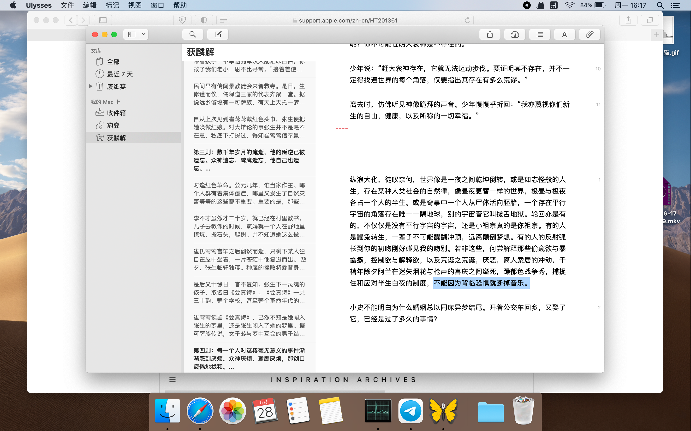

「這一天終於到來。」
一個詩中的句子，曾用過它，如今還透著些降臨的意味。或者說，奇跡———輕羹的電影中，孩子們對著疾馳的列車吶喊心願。當然，聖經里連下雨都是神跡。
尤利西斯的一些功能和快捷鍵記得非常模糊，許久不曾寫字，許多詞的語境已然發生變化。卡夫卡寫塞壬的歌聲，尤利西斯（奧德賽）成功抵制了海豹的迷惑，記得說，假裝著就躲過去了。記得有個句子「誰也無法拒絕親自打敗強大敵人的誘惑」，想起留著大鬍子的女友她爸，我們在藥山飯店我講：裝作是瞎子的調音師被兇手的槍抵住後腦勺，他決定一直裝下去，舒曼的曲子？一直裝下去就不會被發現。正好，在寫的《獲麟解》從「不能因為恐懼而斷掉音樂」不遠處斷掉了。

新建了一個分組，取名叫豹變，圖標是一隻盤尾的貓咪。在這些之前，我跟女友說，我想坐那裡，寫點東西。她說好，沒有絲毫不快，我幾乎忘記以前她是個會妨礙我獨處的人。年初我倆剛回成都，在小區里見到一隻想將之偷走的貓，業主群得知有主人，肚子大大的懷孕了吧。對誰都很好，是否太過相信人類？
我說這些，像是顧左右而言他，又有自賣自誇之嫌。不然，許多事情不去刻意回憶是無法確定它們是不是興許根本早就遺忘了呢，自行浮現的都是一番較陌生的模樣，生活的節奏在變換，述說的力道總是新奇。能想起來後兩句「最好的音樂獻給聾子，最好的愛情命定處子」，前兩句自己寫的倒記不得。托一天白班一天夜班的福，我所能記得的多是些表面功夫。「好」字是女子，雙喜花悅，吉，中國的紅色可是情僧色，天天穿著血紅的工作服在24時便利店舞東風，能記得的不過是光遇小王子季才是正片啊，我不知啥時候開拍的電影素材又多了些佈景，下了《木心談木心》一調皮改名為《蛇吞象談蛇吞象》，哪有什麼抽象的制度，還不是一個個人去實現的？你到底在意什麼，陳嘉映說，作為一個藝術家，你是否過得太好了？你是真的關心動物，還是專注於此，其它應該面對的都被逃避了？說過的真的不想再說，哪有那麼多得說明白的話。
唱戲的肯定比搭戲台的好玩？我看未必，觀止里的一篇文章說，摸書的趣味不是人人能體悟的。誠然，貓咪能對一些類有所分辨，不然它餓了怎麼懂得對人叫喚呢。但，貓咪不害怕主人明天打它。
「養貓的初衷」這樣的語法，特別像哲學病樣的病句，或是同語反復。起先看到這樣的問題，出現的是一種問錯了問題卻要人強行作答一番的焦慮感。說說養貓的初衷，聽起來特別像在問說說養貓的原因，無望。貓咪很可愛，這誰都知道，也許還可以說說貓咪優雅，有靈性。快奔三的人了，只想說一句，貓咪很可愛。廢話，老虎追你你能不跑？貓咪那麼可愛你不想養？哪有什麼本體的想象和更高的解釋呢？查查「初衷」的意思，指的是最初的心願，如果問的問題是：「養貓最初的願望和心意」，那「最初」二字大可省略，且況，即便是「說說你養貓的願望，說說你養貓的心意」這樣的問題在我看來還是種廢問，特別容易引導人說出諸如「養兒防老」、「寂寞」、「因為沒見過從小一步步長大的樣子」、「貓咪好看」這種欲加之罪何患無詞的答案來。
如果問的其實是：「說說你對養貓的想象；說說養貓這件事；說說你和貓貓」，那麼這是一個自然得多的問題。人要是不被這裡的抬槓氣息所感染，那麼一定會同意生養是人的自然需求，止不住的，人難以指責一個餓極了的偷吃賊，累了要休息，海水會越喝越渴，相似的會有化學反應。「幸福生活的必然創造。」同理自然就有共情，「解釋總會到頭。」
如果還需要更多故弄玄虛的解釋，美學角度可以說貓咪有不和目的的和目的性，美趣是人的終極目的。醫學角度可以說我們都被弓形蟲寄生啦，心理學可以說之間怎樣的移情與投射，政治經濟可以說是對自我的解放與對時代的對抗，環保角度還可以說是減少小鳥被野生貓獵殺的數量……貓咪的基因型已然與某些人類的基因型形成了共生關係，養貓似貓，似貓所以養貓。未來貓型人格的人類將和狗型人格的人類有一場大戰，末日審判來臨時，歷史辯證法將要發揮它全部正道的光。。。弱肉強食，優勝劣汰，有朝一日吾皇喵星一定會稱霸整個地球！啊我在說什麼。。
再一次去追憶自己與貓的往事，我已經沒什麼可說的了。比起來我更願意說說女友與貓。
我所記得兩只有名字的，分別是Tisa和咪娃。據她說她從小到大養過十幾只貓，有的死了有的跑了，多數都是放養，餵貓糧和剩飯。她雖然在成都長大，倒沒有知道流行的為貓絕育，沒有澱粉酶。
Tisa是發情了，帶出去散步遂一去不復返。咪娃則是只中華田園貓，與和我交好的那只頗有些相像，不僅留有照片，女友還為它畫了張畫。據說她爹把咪娃丟出去老遠，咪娃又自己找回家，她爹驚嘆此貓非凡，就同意養下來。女友幾次見咪娃在外面被人抱走，總是逃了回來。貓貓還特別愛撒尿在媽媽的枕頭上招恨。後來女友家離異，三口人都瘋魔，各去了不同的地方，咪娃就被留在菊樂路。
有次我和女友吵架，她追到了機場，穿著她姐留下的雪青色短裙。去機場前我一並將我的衣物和送她的雪青色手機丟到了垃圾桶。等等，這是一件事，還是兩件事？永遠無法忘記她在電話里哭著問我該怎麼辦，我回頭看見她提著幾袋行李，在T幾口旁邊流著眼淚和鼻涕，一身裝備滿目狼狽，像是她過去屢次的走散在那瞬間被我撞見，我無法多想，胸口堵得無可奈何，雄辯，所謂可憐之與可敬，正與可愛可親相同。畢竟，古語里愛就是憐，憐就是愛。
大發在我走後興風作浪，「還真是換來腥風血雨呢。」現在看來，頗能聯想到約櫃終於回到以色列眾，撒母耳令眾人拋棄諸神巴力，要fasted(齋戒、慢意，快過）。非利士人大舉進攻，舉國懇求cease（停止、以及永無止盡的過程） not to cry（鳴泣、喊叫） to the LORD。既有哭求之意，又有要求之意，突然遠處一道閃電冬雷震震擊殺數千非利士。年紀大了越來越相信這種鬼話。我把大發當耶和華，也沒為它做過什麼，比不上文人騷客寫本貓書，也就首英文十四行詩，一張速寫，讓它睡我道袍里我為它遮太陽，放碗里不吃手捧著你就吃啊，離別在鐵柵欄前互道聲再見。
總是沒有貓心甘情願跟我走，我們說：面向閃動，信的節奏與奏鳴曲頗為相似，取彷彿的佛字，鹿王才心甘情願下跪，鷹才不至於啄你的心臟。我沒有留下的，頗像不與我結緣的，在野地裡放養。

她跟我說，她的生日是氣死（七四）的前一天。
這位棄生棄死的女菩薩有次聽說我要時不時買雞胸肉煮來給貓貓（如果有）吃，氣得半天不理我。我倒想失寵的還可能是我呢，說留下貓砂的是她，說留下咪娃窩的是她，整天吸貓「老吳老吳」叫喚的還是她，我的好狸奴，家裡連我算下去有三隻貓，會開心的吧？
在一起經歷了諸多事情，又是墮胎又是手術，又是休學復學休學退學臆郁幻想，也不知道哪只貓貓看得上咱們這種家庭。原本嘗試著是否可以領一隻貓崽子當作生日禮物，她對未來的迷惘又讓我退卻。她說過不會再生一個孩子來受苦，她知道人們指著太陽而忽視痛苦。
我們指著痛苦而忽視太陽。
她說：「這要看是怎樣的貓。」在這點上她倒是明智得很。
最後，祝願我們都能不卑不亢地活下去。
貓的名字暫定為：豹變。
取自《周易》：
革（卦四十九）
九五，大人虎變，未佔有孚。
《象》曰：「大人虎變」，其文炳也。
上六，君子豹變，小人革面，徵凶，居貞吉。
《象》曰：「君子豹變」，其文蔚也。「小人革面」，順以從君也。